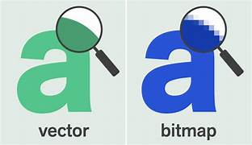

Een computer doet eigenlijk vier dingen:
Invoer is als het plaatsen van informatie in de computer. Stel je voor dat je een toetsenbord gebruikt om woorden te typen, een muis om dingen op het scherm te klikken of een microfoon om te praten met de computer. Dit is allemaal invoer.
Verwerking is wanneer de computer nadenkt en beslissingen neemt met de informatie die je hebt ingevoerd. Het is als het denken van de computer. Het doet wiskunde en volgt instructies om te begrijpen wat je wilt doen.
Uitvoer is wat de computer je laat zien of horen nadat hij heeft nagedacht en verwerkt. Het is als het antwoord van de computer. Je ziet tekst en afbeeldingen op het scherm, hoort geluid uit de luidsprekers of krijgt zelfs een geprint document als resultaat.
Opslag is als het geheugen van de computer. Het is waar de computer dingen bewaart die hij later nodig kan hebben. Denk aan het opslaan van foto's op je telefoon, zodat je ze later kunt bekijken. De computer kan dingen voor langere tijd bewaren op harde schijven, net zoals je je foto's opslaat op je telefoon.
In het kort, een computer doet vier dingen: hij neemt informatie in (invoer), denkt erover na (verwerking), laat je iets zien of horen (uitvoer) en bewaart dingen voor later gebruik (opslag). Deze stappen zijn hoe een computer werkt en de basis van alles wat hij doet. Klik op de afbeelding hieronder voor een duidelijkere uitleg.
